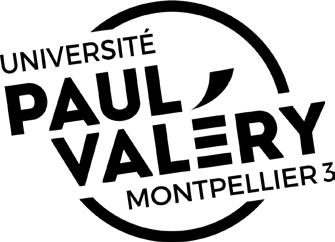
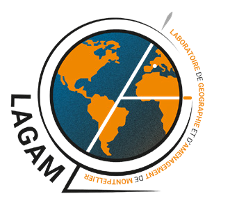
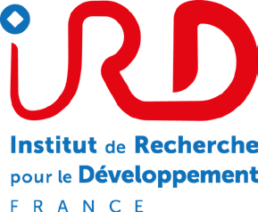
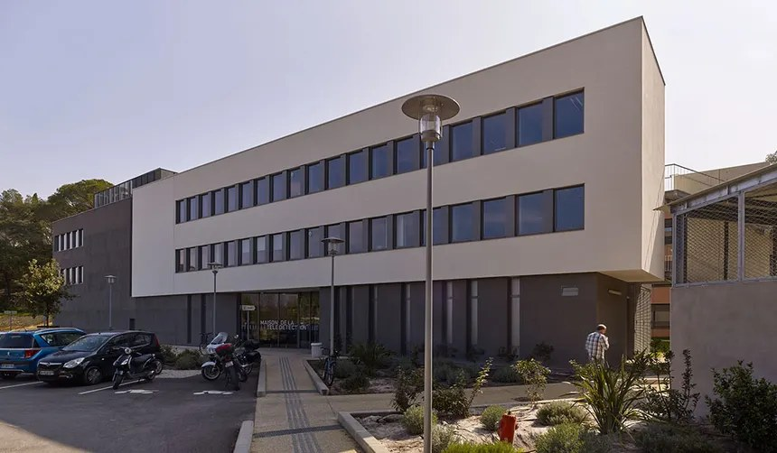
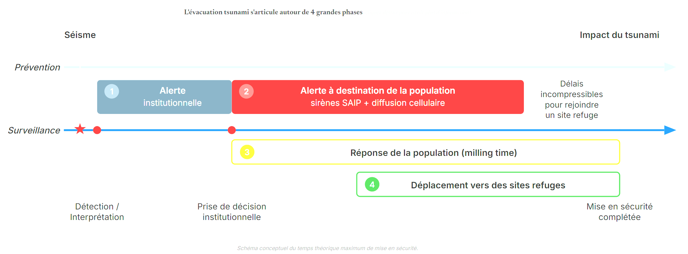
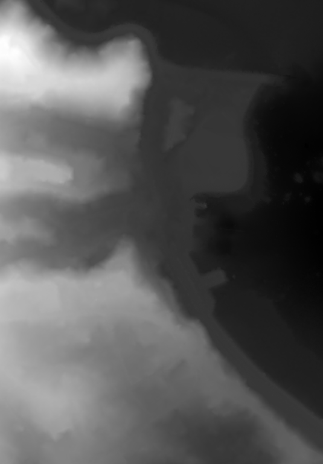
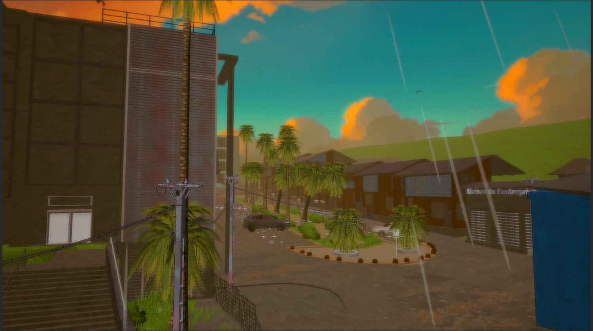
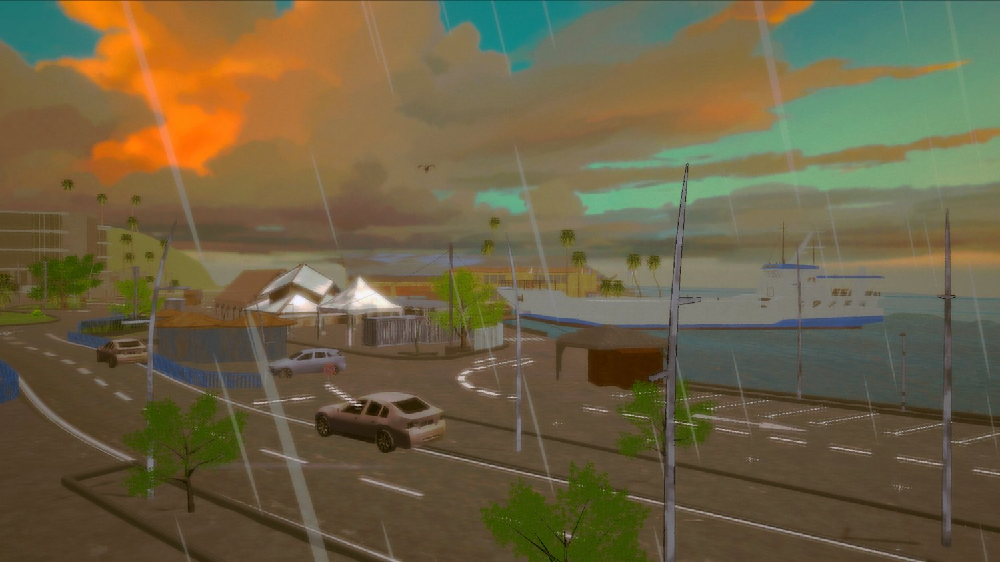

Mémoire de stage
Couplage entre simulation multi-agents et game design dans le projet PEPR IRIMA ROM
Matiss Corrigou
Licence professionnelle Métiers du jeu vidéo, Université Paul-Valéry Montpellier 3
Stage de Technical Artist au LAGAM, avec l'IRD / ESPACE-DEV, du 6 avril au 6 octobre 2026
Soutenance du 2 octobre 2026



Question de départ
Cette simulation est un outil de recherche : comment la rendre perceptible pour un public non spécialiste ?

Maison de la Télédétection, Montpellier (IRD / ESPACE-DEV), lieu du stage
Un poste de Technical Artist, à la croisée entre l'artistique et le technique :
Encadrement : Frédéric Leone (LAGAM) et Kévin Chapuis (IRD). La partie jeu vidéo et Unity, c'était pour moi seul ; le reste restait du côté du laboratoire.
Problématique
Dans quelle mesure la conception d'une boucle de gameplay fondée sur l'observation et la validation humaine permet-elle de traduire une logique de simulation scientifique en expérience immersive de sensibilisation, tout en composant avec les contraintes d'un développement solo en réalité virtuelle ?
Ce projet n'est pas la seule tentative de faire sortir la simulation GAMA du cercle des chercheurs. Il existe deux façons bien différentes de le faire.
la simulation GAMA
Un outil de modélisation manipulé par des spécialistes.
plateforme web de Noé Carles
Les responsables politiques explorent les résultats de la simulation, sans maîtriser les rouages techniques. But : comprendre et aider à décider.
ce projet
Une expérience vécue : on joue soi-même l'alerte, au lieu de consulter des données.
Le décideur consulte pour décider ; le citoyen vit la situation pour la comprendre.
Les enfants relaient facilement l'information dans le foyer. En classe, une séance est encadrée par un enseignant ou un médiateur, et le jeu se joue en groupe : chaque élève a son rôle.
C'est ce contexte de classe qui a orienté le gameplay vers plusieurs joueurs.
Les signes précurseurs d'un tsunami (retrait de la mer, comportement animal inhabituel, légères secousses) sont rares, brefs et peu connus du grand public.
La VR permet de les mettre en scène volontairement, dans un environnement sûr et reproductible, pour que le joueur apprenne à les repérer.

D'après le schéma conceptuel de Noé Carles (LAGAM), plateforme « Se préparer en cas de tsunami à Mayotte »
Chaque fiche est une vraie fiche de gestion de crise : la description du signe à repérer, le protocole d'alerte associé, les caractéristiques de la catastrophe elle-même, et le profil de la population du secteur — sans jamais voir le terrain.
Il reçoit des alertes sur sa carte, mais ne sait pas ce qu'elles signifient ni ce qui se passe réellement sur le terrain.
Il est sur place et peut observer, mais ne voit ni l'écran du Poste ni les fiches du Réseau.
Aucun des trois ne peut résoudre la situation seul : ils doivent se parler pour comprendre ce qui se passe et réagir avant le tsunami. C'est cette coopération qui met en scène l'alerte montante dont je viens de parler.
d'où vient l'information, donc sa fiabilité
où, sur la carte du Poste
Un signal vert (peu fiable) apparaît près d'une embouchure. Trois fiches du Réseau restent plausibles pour ce lieu :
Plusieurs signaux peuvent être actifs en même temps, avec des trajets limités pour le Terrain.
la simulation
C'est : une plateforme de simulation multi-agents, programmée en GAML.
Ici : fait évacuer la population de Mamoudzou. J'y ai ajouté les événements précurseurs et la validation.
le middleware
C'est : un logiciel intermédiaire : un plugin côté GAMA, un serveur (WebPlatform) et un modèle de projet Unity.
Ici : transporte en temps réel positions, terrain, messages et actions.
le jeu sur casque Meta Quest
C'est : un moteur de jeu. L'application tourne sur le casque.
Ici : affiche Mamoudzou en 3D, gère les déplacements du joueur et la prise de photo.
D'après la documentation du middleware SIMPLE (doc.project-simple.eu)



À gauche, le modèle numérique de terrain (MNT) du LAGAM. À droite, deux captures de l'environnement dans Unity : une rue et les abords du port, avec véhicules, végétation et oiseaux.
Pour moi : des compétences nouvelles (GAMA, VR, couplage multi-logiciels) et une poursuite en master.
Dans quelle mesure une boucle fondée sur l'observation et la validation humaine traduit-elle une simulation scientifique en expérience de sensibilisation, avec les contraintes d'un développement solo en VR ?
Merci de votre attention. Je reste à votre disposition pour vos questions.